每到高考和中考前，考生们都在紧张地做最后的复习，这时，很多家长比考生更紧张，而让家长朋友最劳神的一件事，就是怎样才能让自己的孩子吃好、补好。
其实，考生的饮食可以分为两个阶段：第一个阶段是备考期间；第二个阶段是考试期间。
备考阶段的饮食，可以在孩子考试前的几个月，甚至半年、一年就开始。
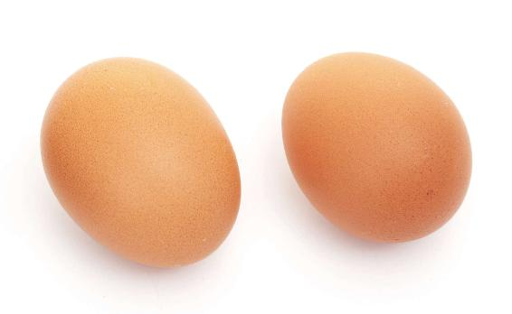
备考期间的饮食有两个原则：
第一，给孩子补脑。
第二，给孩子减压。
其实，给孩子补脑不需要用特别昂贵的补品，因为参加中考、高考的孩子，一般都在青春期，这个时候吃一些过于滋补的食品，对他们的身体发育反而没有好处。有些孩子可能还会因此上火，长青春痘，甚至会出现一些其他问题。最好是用家常便饭来给他们补，其中最适合给孩子补的是蛋类，也就是鸡蛋、鸭蛋等。
1.为什么要用蛋类给孩子补脑呢？
蛋类的营养价值高，属于全价营养。
第一，蛋类中的蛋白质，属于优质的蛋白质，特别容易被人体吸收，人体对它的吸收率可以达到98%。而且鸡蛋的蛋白人体必需的8种氨基酸，它都具备，与人体蛋白的组成极为近似。
第二，蛋类中的蛋黄，含有丰富的卵磷脂，通过肠道消化酶的作用，释放出的胆碱进入大脑，生成乙酰胆碱。乙酰胆碱是脑细胞之间用来传递信号的一种物质，它能增强人的记忆力。
第三，蛋黄中含有丰富的叶黄素和玉米黄素，对于长期盯着电脑和手机屏幕的孩子，可以帮助眼睛过滤有害的蓝光，对视力有好处。
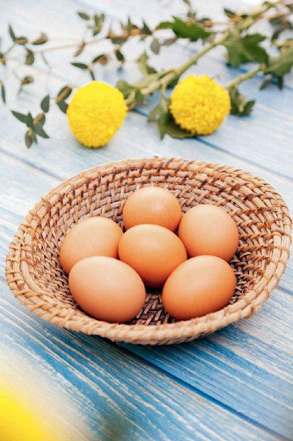
第四，蛋白是补气的，蛋黄是补血的。在备考期间，孩子每天的学习任务都非常重，起早贪黑的，气血多少会有一点虚，用蛋类给孩子补，既可以补到气血，又比较安全、平和，很适合青春期的孩子。
第五，蛋类对神经系统的稳定很有好处。蛋白是提神的，蛋黄是安神的，都是可以营养神经的。
2.什么情况下多吃蛋黄或者蛋白？
如果您觉得孩子的睡眠不太好，或者情绪不稳定，可以给他多吃一点蛋黄；如果觉得孩子有点没精打采的，不妨在白天多给他吃点蛋清，也就是蛋白。
蛋清可以润肺，还能调理咽喉的疼痛。特别是在孩子咳嗽的情况下，吃一点儿鸭蛋的蛋白，效果是很好的。
蛋黄是养心的，它能调理因考试紧张而产生的心理烦躁和睡眠不宁，特别是鸡蛋的蛋黄，调理效果更好。
如果平时保健，您最好让孩子蛋白、蛋黄一起吃，可以气血双补。
3.孩子备考期间，鸡蛋、鸭蛋最好交叉着吃
孩子在备考期间，鸡蛋、鸭蛋最好交叉着吃，或者混着来吃，因为鸡蛋和鸭蛋的营养是有一点区别的。
如果想要养心安神，就吃鸡蛋的蛋黄；如果想要给孩子润肺止咳，就吃咸鸭蛋的蛋白。
鸡蛋是偏温性的，而鸭蛋是偏凉性的，所以要经常混着来吃，这样寒、热就比较平衡。
鸡蛋补气血的作用比较强，而咸鸭蛋能滋阴、降虚火，还有一定的消食作用，吃咸鸭蛋既补又不会给肠胃增加负担。
鸭蛋里含有的一些微量元素，有一些比鸡蛋要高，比如，钙、铁、维生素B2。其中，维生素B2对神经系统的稳定很有好处。
读者评论：鸡蛋、鸭蛋轮流吃，孩子这学期成绩上来了
飞杨翔雲_kw：女儿以前成绩平平，这半年来坚持每天早上一个蛋，鸡蛋、鸭蛋轮流吃，这个学期成绩上来了，高兴！明年就考中学了，坚持老师的秘方。
蔡蔡：我儿子脸上经常长痘痘，吃了两三个咸鸭蛋后，痘痘竟消失了！
我给您推荐一道菜，可以把鸡蛋和鸭蛋放一块来吃，也是我家经常用来给学生补脑的一道菜，叫作赛蟹黄。
其实，赛蟹黄是民间的一道传统菜，它吃起来特别像螃蟹的肉和黄混合在一起的味道。
鸡蛋是黄色的，鸭蛋炒出来后是白色的，里面又混有红红的鸭蛋黄，看起来像是蟹黄一样。
因为赛蟹黄用到了姜，又用到了醋，平时吃螃蟹的时候都是蘸着姜、醋来吃的，所以这道菜一端上桌，大家一闻就有一种吃螃蟹的感觉，也是这道菜名字的由来。
赛蟹黄
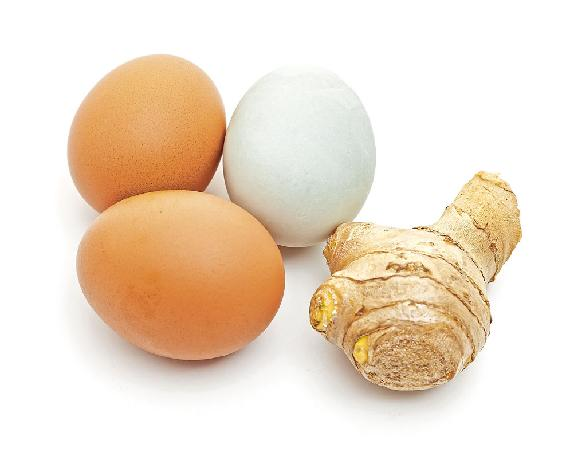
原料：鲜鸡蛋2个，生的咸鸭蛋1个。（注意：市场上买来的咸鸭蛋，有些是熟的，而这道菜里用的是生咸鸭蛋）
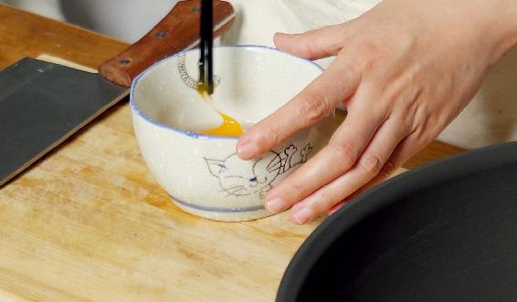
做法：
1.把生咸鸭蛋磕入碗中，用筷子戳里面的蛋黄（鸭蛋经过腌制后，蛋黄就会凝固，是不容易被打散的，我们用筷子多戳几下，只要把它分割成小块就行了，打不打散没有关系）。
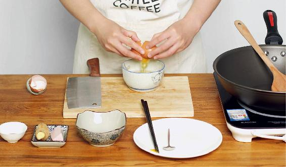
2.在碗里再打进两个新鲜的鸡蛋，打成蛋液。
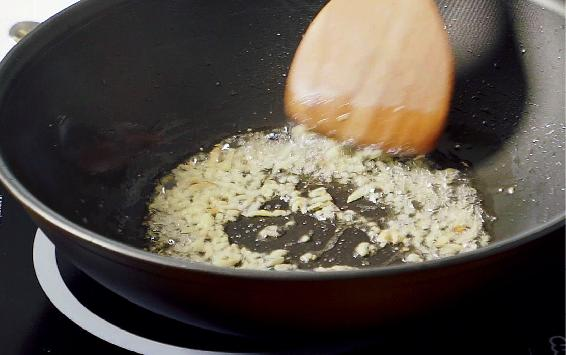
3.锅里放少许猪油，烧热后，取两三勺姜末（注意姜末要用新鲜的生姜带皮切），下锅爆香。把混合的蛋液倒进锅里，快速炒熟。起锅之前，浇上一勺醋，翻炒两下再起锅。
用赛蟹黄来补脑，是可以增强记忆力的，把鸡蛋和鸭蛋混合在一起，就起到了营养互补的作用。
中考、高考的时候已经是夏天了，考生光吃鸡蛋感觉有一点偏温性，用鸭蛋正好可以平衡这种温性，这样吃起来就不容易上火、积食。
有的考生在备考期间很紧张，加上孩子的年龄都不大，消化系统相对比较弱。有些家长怕孩子吃不好，就给他吃很多营养丰富的东西，这样往往就容易造成积食。而咸鸭蛋在此时就起到了消食的作用——既能滋补孩子的身体，又不会给孩子的肠胃造成负担。
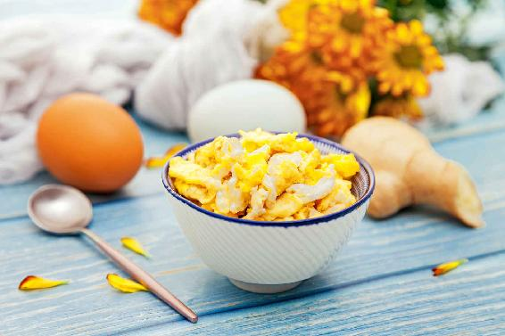
赛蟹黄里的姜和醋都是有作用的。在初夏的时候，姜真的是每天要吃的一样东西，而醋在这道菜里可以起到缓解压力的作用。
在孩子备考期间，家长不妨经常给孩子换换口味，有时候给孩子吃鸡蛋，有时候给孩子吃鸭蛋，有时候就把鸡蛋和生的咸鸭蛋混合在一起，给孩子做一道美美的赛蟹黄。
备考期间的第二个饮食原则是减压。
首先是要减轻孩子脾胃的压力。在考试之前的这几个月，家长真的不要给孩子吃太多的鱼、肉这些过于滋补的东西。因为这时候孩子学习很紧张，他的脾胃功能没有平时那么好，如果吃太多滋补的东西，特别是蛋白质含量高的，很容易不消化，反而使孩子营养跟不上，体力变差、精神压力增大。
在备考期间，只要让孩子保持摄入优良、好吸收的蛋白质就可以了，比如，蛋类、银耳、酸奶、蔬菜等都含有易吸收的蛋白质，吃这些摄入的蛋白质也足够了。
其实，家长们不用担心孩子肉吃少了，营养不够。在备考期间，尤其是马上要到考试的时候，孩子最需要的不是大量的蛋白质，而是维生素、矿物质和糖类。
考试是需要用脑的，因此，消耗的维生素、矿物质和糖分比平时多得多。这时候要让孩子多吃蔬菜、水果、粮食，它们能给大脑提供充足的能量，又能缓解孩子的心理压力。
如果您实在担心孩子摄入的蛋白质不够，比如，有些孩子不爱吃鸡蛋、鸭蛋，那您可以给孩子多喝一些酸奶。酸奶是比牛奶更健康的食物，而且它比大鱼大肉要好消化一些。
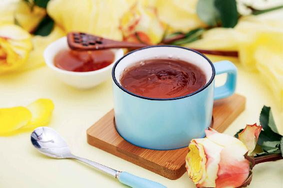
酸奶经过了发酵，奶中所含的各种营养成分更容易消化吸收，是除了母乳之外，最适合给孩子喝的奶了。
经过酸奶发酵过程中乳酸菌的作用，酸奶的蛋白质既优质又容易吸收，每天只要喝一杯酸奶，就相当于吃一个鸡蛋。
喝牛奶会产生“乳糖不耐”问题的人，喝酸奶基本就没有问题，不容易腹胀腹泻。
酸奶含有丰富的乳酸，它能促进人体的消化吸收能力。
喝酸奶补钙也特别好，酸奶中的钙是人体吸收率最高的一种。
喝酸奶还有助于帮孩子抵抗肠道传染病。
备考期间，孩子的学习负担特别重，人也会特别疲劳，您可以给孩子准备一种减压饮料——蜂蜜醋水。它酸酸甜甜的，很好喝。它能清洁肠胃，给孩子的脾胃减压；又能缓解疲劳，愉悦心情，给孩子的心理减压。
第一，缓解压力。
第二，清洁肠胃。
第三，提高睡眠质量。
其实，蜂蜜醋水不仅孩子可以喝，大人也能喝。
蜂蜜醋水有助于清除我们身体内的毒素，如果您不是怕酸或是有胃病的人，也可以试着在早上空腹来喝。此外，喝蜂蜜醋水对缓解便秘也有一定的作用。
有的朋友坚持喝了一段时间的蜂蜜醋水以后，发现皮肤变白了，这是因为身体内部清洁了，自然就反映到了皮肤上。
自制蜂蜜醋水的时候，用什么样的蜂蜜比较好呢？
各种蜂蜜其实都是可以的，如果有条件，用应季的蜂蜜最好。高考、中考前应季的蜂蜜是橘花蜜。
用橘子皮制成的陈皮可以疏肝理气，橘子的花也具有相似的作用，因此，给孩子喝用橘花蜂蜜调和成的醋水，对于缓解情绪压力是有帮助的，还可以保肝。
当然，如果您买不到橘花蜂蜜，用其他的蜂蜜来调和醋水也可以。
蜂蜜醋水
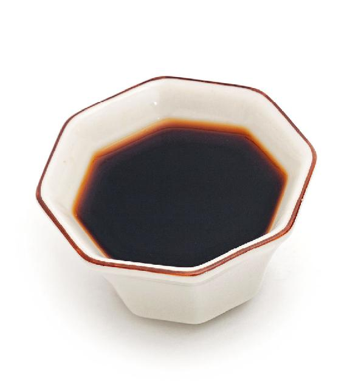
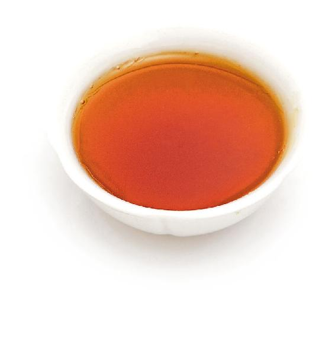
原料：1勺醋，1勺蜂蜜，1杯温水。
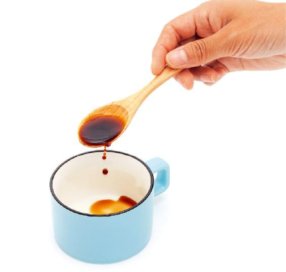
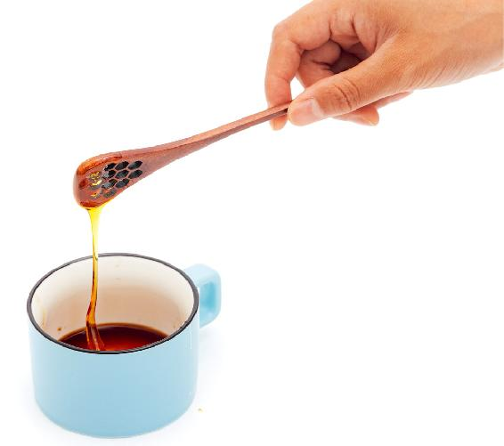
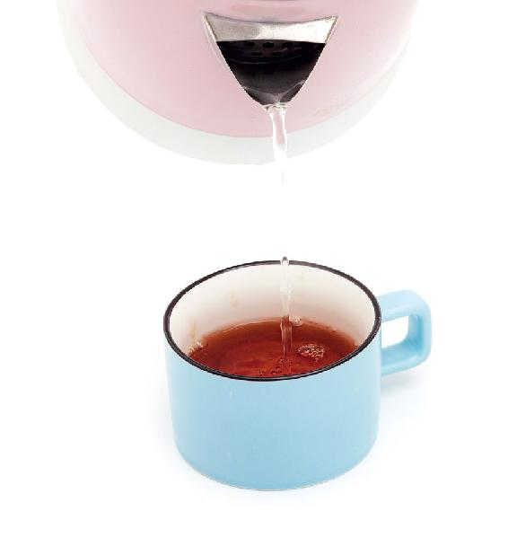
做法：把三样原料调和一下就成了。
允斌叮嘱：
1.调蜂蜜醋水的水温不超过40℃比较好，能充分保留蜂蜜的营养，口感也更甜。
2.胃酸过多型胃病的人不要喝。
3.早上给孩子喝的时候，不要加太多的蜂蜜，因为蜂蜜有安神的作用。